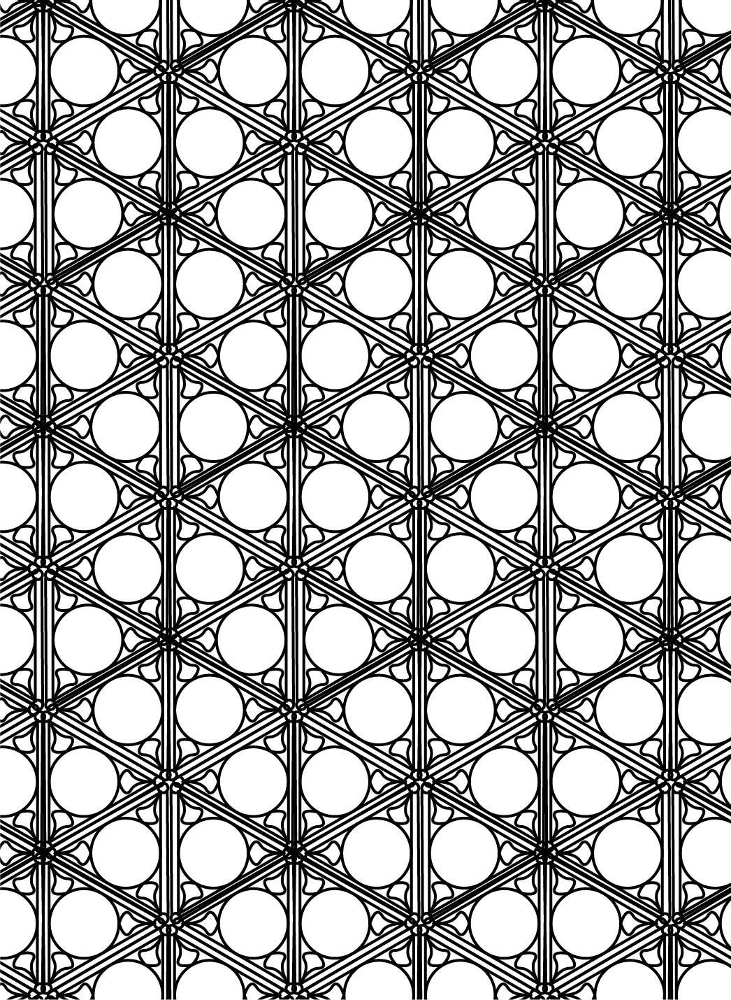
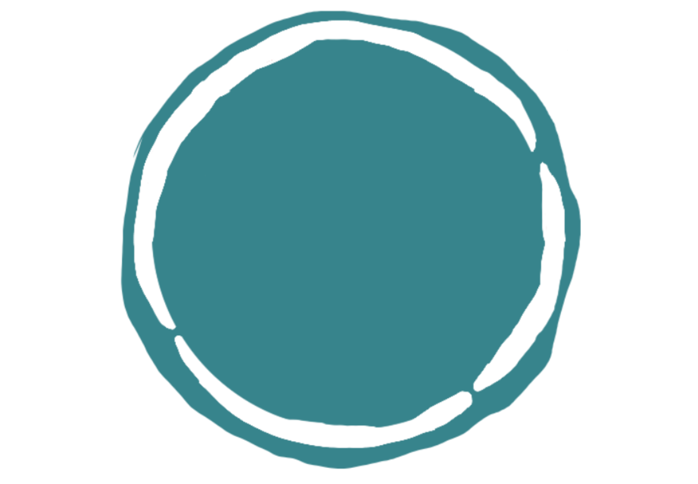
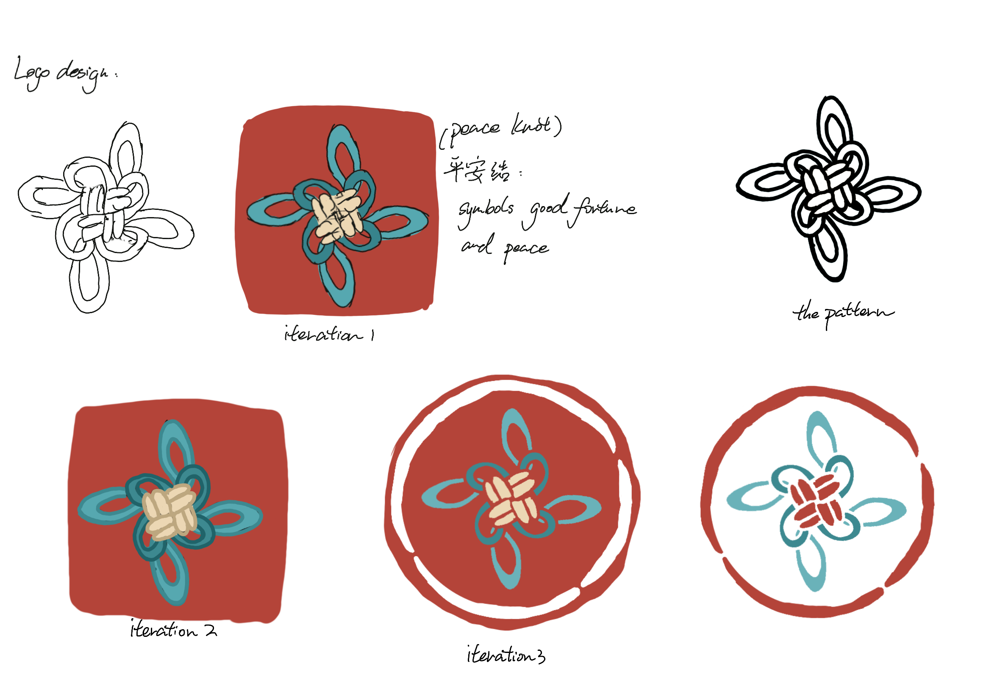

Other 其他
Find your activity today! 来寻找你喜欢的活动吧!

Today’s new events 今日信息 My Calendar 我的日历 My Journal 我的日志

Find your activity today! 来寻找你喜欢的活动吧!

Today’s new events 今日信息 My Calendar 我的日历 My Journal 我的日志